Ana sayfa › 4. Dönem › İşaretler ve Sistemlerİşaretler ve Sistemler ELM264 Ders Notları Signals and Systems — lecture notes and projects at Gebze Technical University (GTU) Electronics Engineering
Sürekli ve ayrık zamanlı işaretler, LTI sistemler ve konvolüsyon, Fourier serileri ve dönüşümleri, Laplace ve z-dönüşümü.
Continuous- and discrete-time signals, LTI systems and convolution, Fourier series and transforms, Laplace and z-transforms.
4. Dönem · 2022–2023 Bahar 15 ders notu 2 uygulama notu 18 dijital not 2 proje Bu sayfada: Ders Notları Uygulama Notları Dijital Notlar (LaTeX) Projeler
Ders Notları İşaret ve Sistemler ders 1 PDF, 7 s. Dijital sürüm İşaret ve Sistemler ders 2 PDF, 8 s. Dijital sürüm İşaret ve Sistemler ders 3 PDF, 7 s. Dijital sürüm İşaret ve Sistemler ders 4 PDF, 6 s. Dijital sürüm İşaret ve Sistemler ders 5 PDF, 7 s. Dijital sürüm İşaret ve Sistemler ders 6 PDF, 6 s. Dijital sürüm İşaret ve Sistemler ders 7 PDF, 7 s. Dijital sürüm İşaret ve Sistemler ders 8-10 PDF, 10 s. Dijital sürüm İşaret ve Sistemler ders 8 PDF, 9 s. Dijital sürüm İşaret ve Sistemler ders 11 PDF, 6 s. Dijital sürüm İşaret ve Sistemler ders 11 Soru PDF, 2 s. Dijital sürüm İşaret ve Sistemler ders 12 PDF, 7 s. Dijital sürüm Sinyaller ve sistemler 12hafta PDF, 12 s. Dijital sürüm İşaret ve Sistemler ders 13 PDF, 12 s. Dijital sürüm Sinyaller ve sistemler 13hafta PDF, 10 s. Dijital sürüm Dijital Notlar (LaTeX) El yazısı notların LaTeX ile yazılmış, aranabilir dijital versiyonları. Şablon ve derleme: latex-sablon .
Uyarı: Dijital notlar, el yazısı notlardan Claude (Anthropic) yardımıyla oluşturulmuştur; yardımcı kaynak olarak hazırlanmıştır ve hata içerebilir. Orijinal notları ve resmi ders kaynaklarını esas alın.
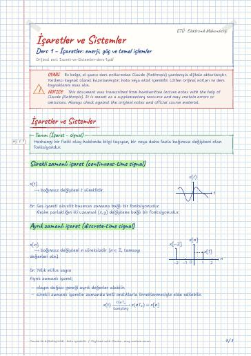
7 sayfa · 0,1 MB
İşaretler ve Sistemler · (İşaret – signal) · Sürekli zamanlı işaret (continuous-time signal) · Ayrık zamanlı işaret (discrete-time signal) · Enerji (energy of a signal) · Güç (power of a signal)
PDF · LaTeX kaynağı · Orijinal el yazısı
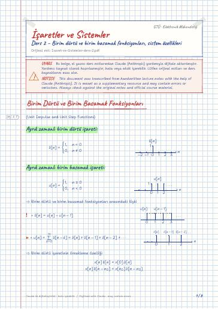
8 sayfa · 0,1 MB
Birim Dürtü ve Birim Basamak Fonksiyonları · Ayrık zamanlı birim dürtü işareti · Ayrık zamanlı birim basamak işareti · Sürekli zamanlı birim basamak işareti · Sürekli zamanlı birim dürtü işareti · ⇒ Sistemlerin birbirine bağlanması
PDF · LaTeX kaynağı · Orijinal el yazısı
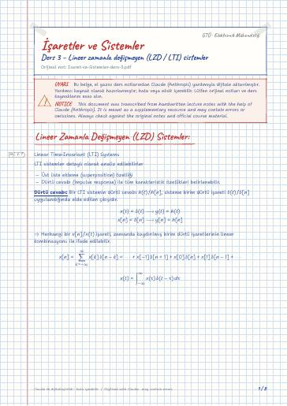
8 sayfa · 0,1 MB
Lineer Zamanla Değişmeyen (LZD) Sistemler · Ayrık zamanlı LTI sistemlerde konvolüsyon · Sürekli Zamanlı LTI Sistemlerde Konvolüsyon · Konvolüsyon işleminin özellikleri · 1) Yer değiştirme (commutative) özelliği · 2) Dağılma (distributive) özelliği
PDF · LaTeX kaynağı · Orijinal el yazısı
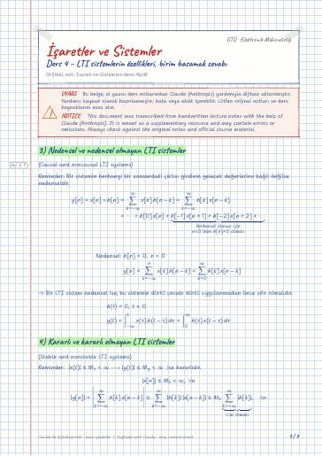
7 sayfa · 0,1 MB
3) Nedensel ve nedensel olmayan LTI sistemler · 4) Kararlı ve kararlı olmayan LTI sistemler · Birim basamak cevabı (unit step response) · Nedensel LTI Sistemlerin Türev/Fark Denklemleri ile Tanımlanması · Lineer sabit katsayılı Türev denklemleri · Lineer sabit katsayılı fark denklemleri
PDF · LaTeX kaynağı · Orijinal el yazısı
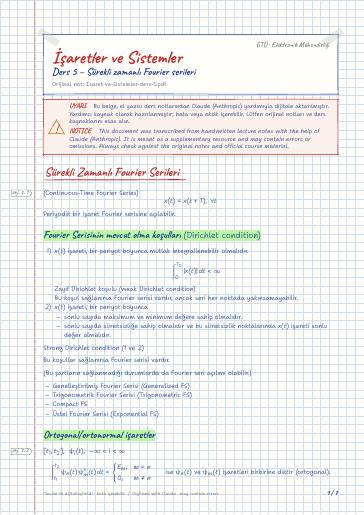
7 sayfa · 0,1 MB
Sürekli Zamanlı Fourier Serileri · Fourier Serisinin mevcut olma koşulları (Dirichlet condition) · Ortogonal/ortonormal işaretler · Genelleştirilmiş FS açılımı · Üstel Fourier Serisi Açılımı (Exponential FS Expansion) · Trigonometrik Fourier Serisi Açılımı
PDF · LaTeX kaynağı · Orijinal el yazısı
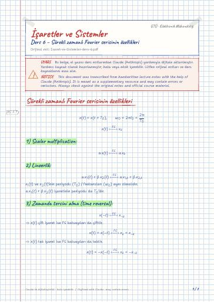
7 sayfa · 0,1 MB
Sürekli zamanlı Fourier serisinin özellikleri · 1) Scalar multiplication · 2) Lineerlik · 3) Zamanda tersini alma (time reversal) · 4) Zamanda öteleme · 5) Frekansta öteleme
PDF · LaTeX kaynağı · Orijinal el yazısı
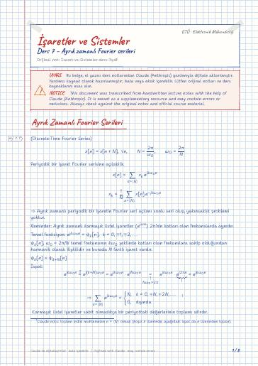
8 sayfa · 0,1 MB
Ayrık Zamanlı Fourier Serileri · Parseval Teoremi · Ayrık Zamanlı Fourier Serisinin Özellikleri · Ayrık zamanlı LTI sistemlerin periyodik işaretlere cevabı
PDF · LaTeX kaynağı · Orijinal el yazısı
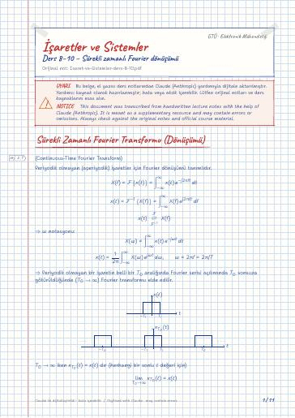
11 sayfa · 0,2 MB
Sürekli Zamanlı Fourier Transformu (Dönüşümü) · Periyodik işaretlerin Fourier Dönüşümü · Sürekli Zamanlı Fourier Transformunun Özellikleri · Parseval teoremi · 10. Hafta · LTI Sistemlerin Frekans Domeni Analizi
PDF · LaTeX kaynağı · Orijinal el yazısı
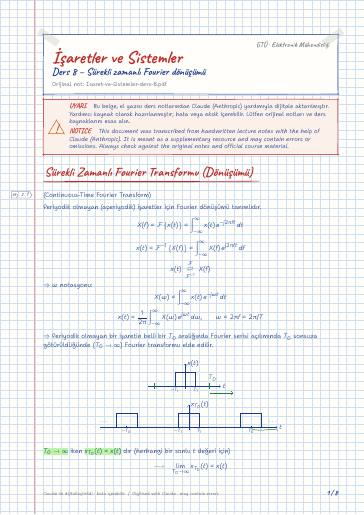
8 sayfa · 0,2 MB
Sürekli Zamanlı Fourier Transformu (Dönüşümü) · Periyodik işaretlerin Fourier Dönüşümü · Sürekli Zamanlı Fourier Transformunun Özellikleri
PDF · LaTeX kaynağı · Orijinal el yazısı
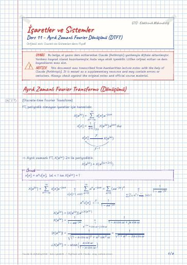
6 sayfa · 0,1 MB
Ayrık Zamanlı Fourier Transformu (Dönüşümü) · Periyodik işaretlerin Fourier Transformu · Ayrık Zamanlı Fourier Transformunun Özellikleri
PDF · LaTeX kaynağı · Orijinal el yazısı
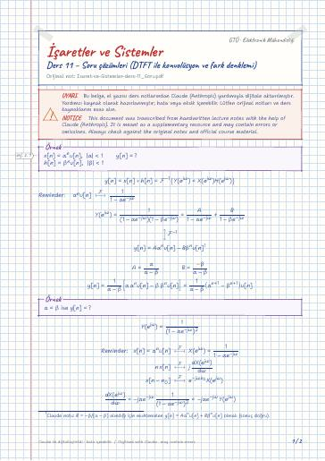
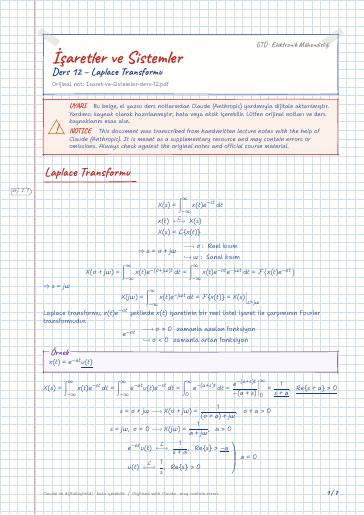
7 sayfa · 0,1 MB
Laplace Transformu · Yakınsama bölgesi (ROC) özellikleri · Ters Laplace Transform · Laplace Transformunun Özellikleri · ROC ile LTI sistemlerin özelliklerinin analizi
PDF · LaTeX kaynağı · Orijinal el yazısı
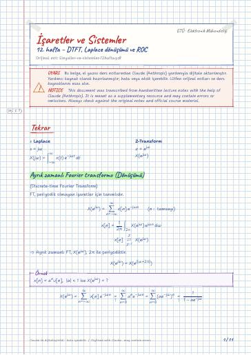
11 sayfa · 0,2 MB
Tekrar · Ayrık zamanlı Fourier transformu (Dönüşümü) · Periyodik işaretlerin Fourier Transformu · Ayrık Zamanlı Fourier Transformunun Özellikleri · Konvülasyon · Laplace Transformu
PDF · LaTeX kaynağı · Orijinal el yazısı
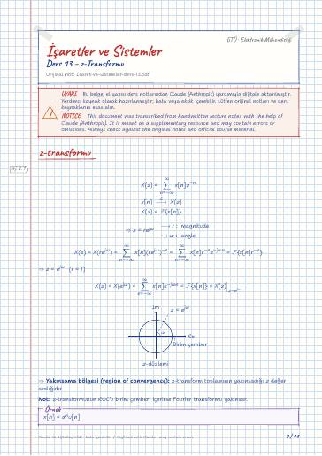
11 sayfa · 0,1 MB
z-transformu · Yakınsaklık bölgesi (ROC) özellikleri · Ters z-transform · z-transformunun özellikleri · ROC ile LTI sistemlerin özelliklerinin analizi
PDF · LaTeX kaynağı · Orijinal el yazısı
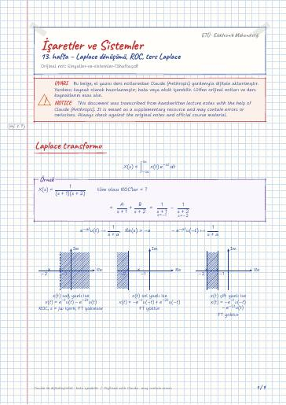
9 sayfa · 0,1 MB
Laplace transformu · Ters Laplace Transform · Laplace Transformun özellikleri · ROC ile LTI sistemlerinin özelliklerinin analizi · z transformu · Yakınsaklık bölgesi (ROC) özellikleri
PDF · LaTeX kaynağı · Orijinal el yazısı
11 sayfa · 0,2 MB
Bağımsız değişken dönüşümleri · Sistem özellikleri · (Lineerlik Şartı) · (Zamanda Değişmezlik Şartı) · LTI sistemlerde nedensellik · Konvolüsyon
PDF · LaTeX kaynağı · Orijinal el yazısı
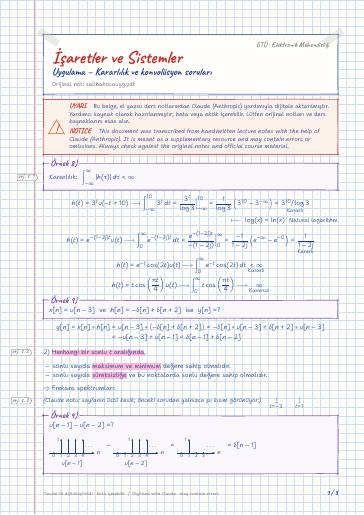
Projeler Proje 1 – İşaret işlemleri: genlik/faz, öteleme ve ölçekleme (MATLAB + analitik çözüm) Project 1 – Signal operations: magnitude/phase, shifting and scaling (MATLAB + analytical solution) · Klasör: projeler/proje-1/
Proje 2 – Fourier dönüşümü ve genlik/faz spektrumları (MATLAB + analitik çözüm) Project 2 – Fourier transform and magnitude/phase spectra (MATLAB + analytical solution) · Klasör: projeler/proje-2/
Aynı dönemin diğer dersleri Devre Teorisi II · Devre Teorisi II Laboratuvarı · Elektronik I · Elektronik I Laboratuvarı · Lojik Devreler ve Tasarım · Olasılık ve Rastgelelik · Türkçe II
GitHub'da klasörü aç ← 4. Dönem
Ders materyallerinin hakları ilgili öğretim üyelerine ve GTÜ'ye aittir; eğitim amacıyla paylaşılmıştır.